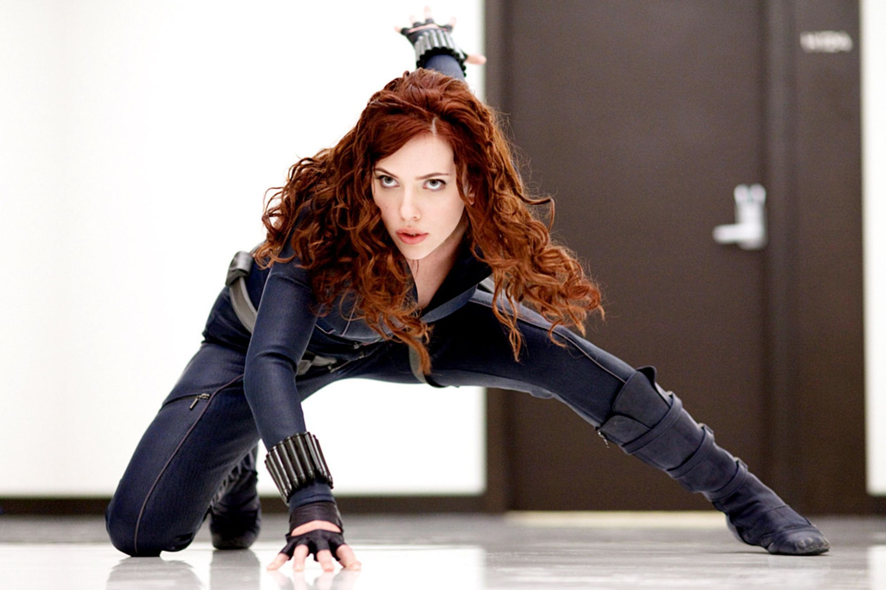
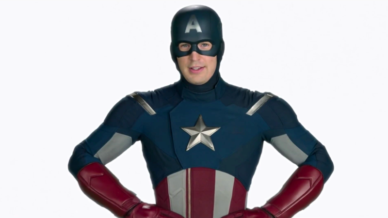
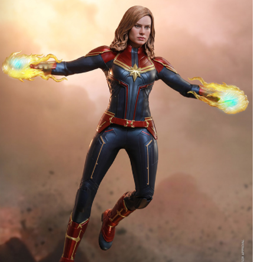

Welcome to Super Yoga!
Find your inner superhero 💪

Welcome to Super Yoga! Ready to try out some superhero moves? Click start to get started. Follow the references images below and the machine learning model will try to guess what pose you are doing. Good luck!
Black Widow

Captain America
Captain Marvel
Iron Man